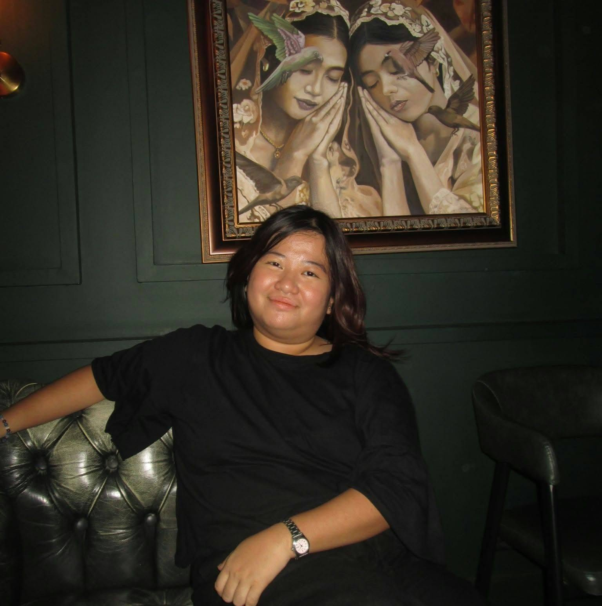
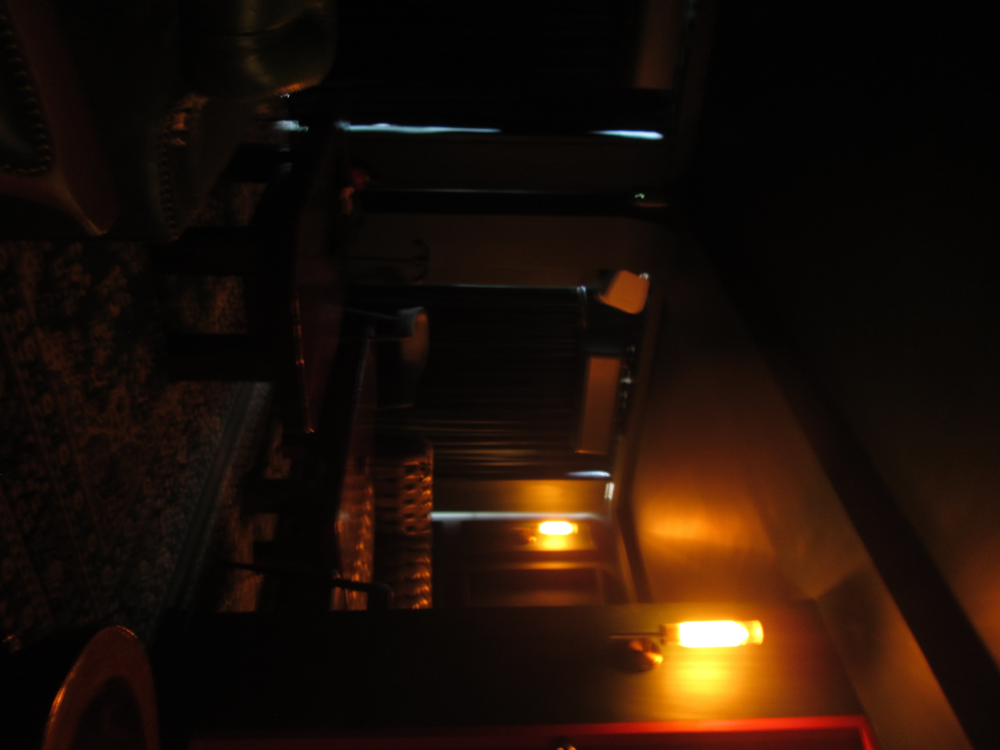
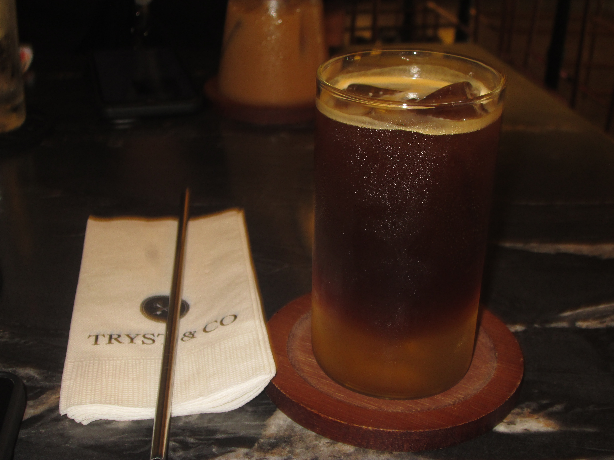
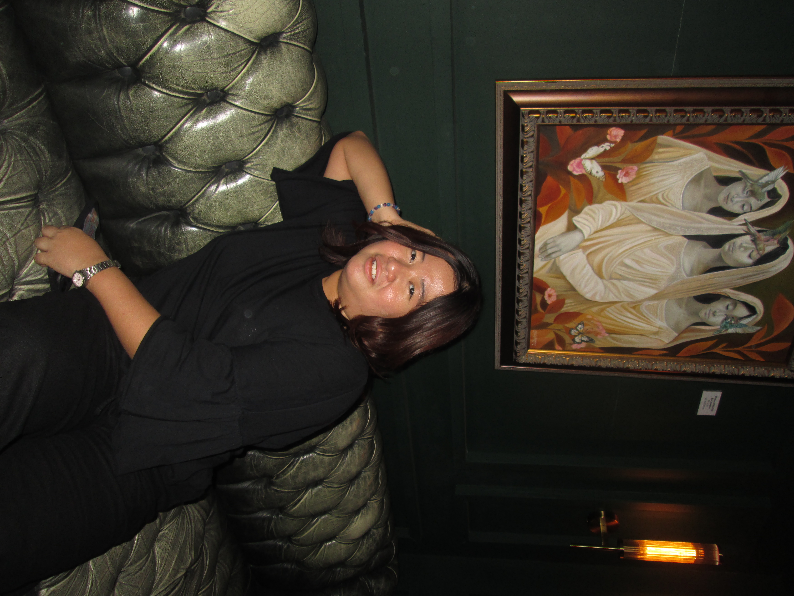

Personal project
Roomify.io
A hotel website project with room exploration and AI-powered features.
BS Information Technology · 2nd Year
“You’re gonna go far.”
IT student, aspiring developer, and curious problem-solver. I’m interested in building useful digital experiences and learning how technology can support people.

Curious by nature · TADSA little about me
I’m an adventurous Information Technology student who enjoys developing ideas, critiquing details, and analyzing how things work. I love meeting people, making new connections, and learning from each step of the journey. In the future, I hope to work in quality assurance and AI engineering, and encourage people to use AI thoughtfully rather than depend on it.
Tools and strengths
My studies
| School | Program | Year Level |
|---|---|---|
| National University – Fairview | BS Information Technology | 2nd Year |
Things I’ve made and imagined
A few projects that reflect my interests in technology, wellbeing, and visual storytelling.
Personal project
A hotel website project with room exploration and AI-powered features.
App concept
A proposed app to support student mental wellness.
Photography
A small collection of café, lounge, and portrait photos.



Looking ahead
Let’s connect
For questions, project ideas, or a friendly hello, email me at:
sacriztad@students.nu-fairview.edu.ph